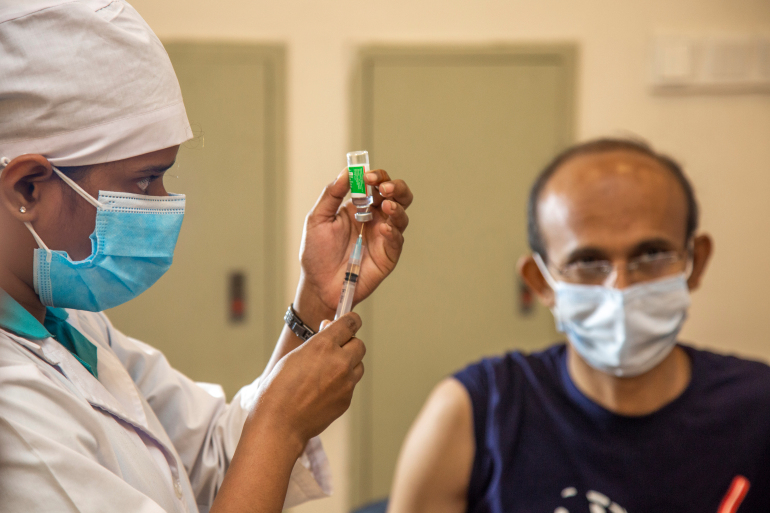

how to prevent virus

wash your place
Clean and disinfect surfaces frequently especially those which are regularly touched, such as door handles, faucets and phone screens.

maintain distance
Maintain at least a 1-metre distance between yourself and others to reduce your risk of infection when they cough, sneeze or speak. Maintain an even greater distance between yourself and others when indoors. The further away, the better

don't touch face
Avoid touching your eyes, nose and mouth. Hands touch many surfaces and can pick up viruses. Once contaminated, hands can transfer the virus to your eyes, nose or mouth. From there, the virus can enter your body and infect you.

wash your hand
To prevent the spread of germs during the COVID-19 pandemic, you should also wash your hands with soap and water for at least 20 seconds or use a hand ...?

use napkin
Cover your mouth and nose with your bent elbow or tissue when you cough or sneeze. Then dispose of the used tissue immediately into a closed bin and wash your hands. By following good ‘respiratory hygiene’, you protect the people around you from viruses, which cause colds, flu and COVID-19.

wear a mask
Make wearing a mask a normal part of being around other people. The appropriate use, storage and cleaning or disposal are essential to make masks as effective as possible.

vaccinated
Vaccines offer strong protection, but that protection takes time to build. People must take all the required doses of a vaccine to build full immunity. For two-dose vaccines, vaccines only give partial protection after the first dose, and the second dose increases that protection. It takes time before protection reaches its maximum level a few weeks after the second dose. For a one-dose vaccine, people will have built maximum immunity against COVID-19 a few weeks after getting vaccinated.